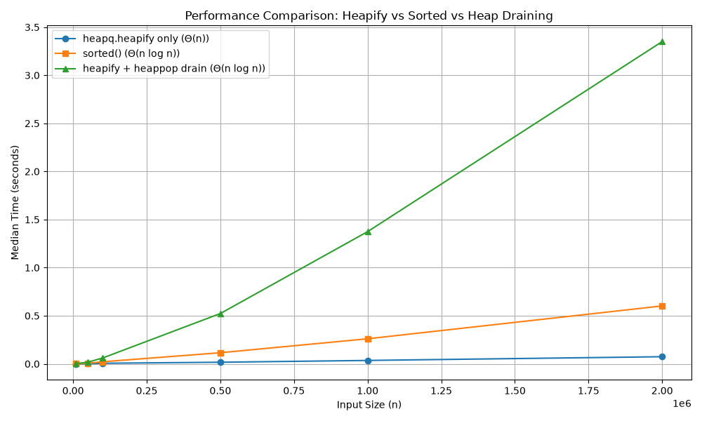

AI Assistance Disclosure: Substantial AI assistance (Google Gemini) was used in the preparation of this report. It assisted in drafting HTML layouts, structuring analytical arguments, and providing boilerplate for the Rust experimental benchmarks. I fully understand the underlying data structures, algorithms, and metric outputs, and am prepared to explain all submitted code and conclusions.
Counting Conventions:
sift_down operation).sift_down).Elements from $0$ through $14$ distributed so that every internal node key strictly exceeds all descendants in its subtree, forcing maximal downward movement:
[14, 13, 12, 11, 10, 9, 8, 0, 1, 2, 3, 4, 5, 6, 7]In a complete binary tree of $n = 15$ nodes, the maximal depth of sift-down for any node is bounded by its height $h$:
Since each sift-down step can exchange a node at most once per tree level, $S_{\max} = 11$ is an absolute upper bound. Because our array achieves exactly 11 swaps, it reaches this bound and is provably as difficult as possible.
| Step | Processed Index | Array State After Step |
|---|---|---|
| Initial | — | [14, 13, 12, 11, 10, 9, 8, 0, 1, 2, 3, 4, 5, 6, 7] |
| Row 1 | $i = 6$ | [14, 13, 12, 11, 10, 9, 6, 0, 1, 2, 3, 4, 5, 8, 7] |
| Row 2 | $i = 5$ | [14, 13, 12, 11, 10, 4, 6, 0, 1, 2, 3, 9, 5, 8, 7] |
| Row 3 | $i = 4$ | [14, 13, 12, 11, 2, 4, 6, 0, 1, 10, 3, 9, 5, 8, 7] |
| Row 4 | $i = 3$ | [14, 13, 12, 0, 2, 4, 6, 11, 1, 10, 3, 9, 5, 8, 7] |
| Row 5 | $i = 2$ | [14, 13, 4, 0, 2, 5, 6, 11, 1, 10, 3, 9, 12, 8, 7] |
| Row 6 | $i = 1$ | [14, 0, 4, 1, 2, 5, 6, 11, 13, 10, 3, 9, 12, 8, 7] |
| Row 7 | $i = 0$ | [0, 1, 4, 11, 2, 5, 6, 14, 13, 10, 3, 9, 12, 8, 7] |
| Method | Final Heap Array | Key Comparisons | Swaps | Min-Heap Invariant Valid |
|---|---|---|---|---|
| Bottom-Up (Floyd) | [0, 1, 4, 11, 2, 5, 6, 14, 13, 10, 3, 9, 12, 8, 7] |
22 | 11 | true ($\forall i: A[i] \le A[2i+1], A[2i+2]$) |
| Sequential Insertion (Williams) | [0, 1, 4, 8, 2, 5, 6, 14, 11, 12, 3, 13, 9, 10, 7] |
27 | 20 | true ($\forall i: A[i] \le A[2i+1], A[2i+2]$) |
Every internal node in the adversarial input exceeds all keys in its subtree, while leaves hold $\{0, \dots, 7\}$. Each sift-down path follows smaller children directly to the leaves, executing $4 \times 1 + 2 \times 2 + 1 \times 3 = 11$ swaps and matching the theoretical upper bound. Williams' insertion processes the same array via sift-up. Because small leaf values are inserted last, they bubble up repeatedly across deep branches, resulting in 20 swaps and 27 comparisons. Floyd's bottom-up method proves far more efficient (11 swaps, 22 comparisons) because it bounds movement by tree height rather than node depth.
To achieve the left-heavy condition without violating the min-heap property, we start with a sorted array $A = [1, 2, \dots, 20]$ and reverse the elements at each depth level $d \ge 1$ (where the root is at $d=0$). For a 0-indexed array of size $N$, the elements at level $d$ span the index range:
Reversing these specific sub-arrays systematically shifts the heaviest available values to the left branches. This permutation serves as both the final min-heap array and the sequential insertion order:
[1, 3, 2, 7, 6, 5, 4, 15, 14, 13, 12, 11, 10, 9, 8, 20, 19, 18, 17, 16]
Visual representation of the complete binary min-heap (root on the left, left children denoted by ┌── and right children by └──). Heavy values are systematically shifted to the left subtrees.
│ ┌── 8
│ ┌── 4
│ │ └── 9
│ ┌── 2
│ │ │ ┌── 10
│ │ └── 5
│ │ └── 11
1
│ ┌── 12
│ ┌── 6
│ │ └── 13
│ │ └── 16
└── 3
│ ┌── 17
│ ┌── 14
│ │ └── 18
└── 7
│ ┌── 19
└── 15
└── 20Verification of the additional "left-heavy" condition. The table includes only the internal nodes that have exactly two non-empty subtrees.
| Index $i$ | Node Value $A[i]$ | $\text{Sum(Left)}$ | $\text{Sum(Right)}$ | Condition $\text{L} > \text{R}$ |
|---|---|---|---|---|
| 0 | 1 | 160 | 49 | true |
| 1 | 3 | 110 | 47 | true |
| 2 | 2 | 26 | 21 | true |
| 3 | 7 | 54 | 49 | true |
| 4 | 6 | 29 | 12 | true |
| 5 | 5 | 11 | 10 | true |
| 6 | 4 | 9 | 8 | true |
| 7 | 15 | 20 | 19 | true |
| 8 | 14 | 18 | 17 | true |
| Metric | Result | Min-Heap Invariant Valid |
|---|---|---|
| Total Elements Inserted | 20 | true ($\forall i: A[i] \le A[2i+1], A[2i+2]$) |
| Total Swaps Required | 0 |
Standard binary heap insertion adds elements level by level from left to right. A swap (sift-up) only occurs if a newly inserted child is strictly less than its parent. Since our array is perfectly pre-constructed so that every child is strictly greater than its parent (intrinsically satisfying the min-heap property), the sift-up condition is never met. Therefore, inserting this sequence element by element naturally builds the exact final heap without requiring a single swap operation.
Environment: Python 3 (Windows), execution timed via time.perf_counter().
Setup: Random permutations of distinct integers. Each size was repeated 5 times using independent input copies prepared before starting the timer. Only the specific operation was timed.
Prediction: heapify + heappop drain will be the slowest due to Python loop overhead. The sorted() function is highly optimized in C (Timsort), but since its complexity is $\Theta(n \log n)$, the $\Theta(n)$ heapify should eventually overtake it.
| Input Size ($n$) | heapq.heapify (s) |
sorted() (s) |
heapify + drain (s) |
|---|---|---|---|
| 10,000 | 0.000232 | 0.001031 | 0.002842 |
| 50,000 | 0.001161 | 0.006511 | 0.017512 |
| 100,000 | 0.006135 | 0.021635 | 0.060654 |
| 500,000 | 0.016832 | 0.115728 | 0.523506 |
| 1,000,000 | 0.035599 | 0.260711 | 1.374629 |
| 2,000,000 | 0.074252 | 0.602061 | 3.349698 |
heapq.heapify proved strictly faster than sorted() starting at the very first tested size of $n = 10,000$ and maintained this lead throughout, successfully demonstrating the advantage of its linear time complexity over Timsort's $O(n \log n)$ bound.sorted()) and Method 3 (heapify + drain) produced perfectly identical sorted arrays across all iterations.
Note: Ensure the generated image file is in the same directory as this HTML file.

Bottom-up heapify runs in strict $\Theta(n)$ time because the maximum distance any node can sift down depends on its height. In a complete binary tree, most nodes are leaves requiring zero operations. The sum of heights for all nodes in an $n$-element tree is mathematically bounded by $O(n)$, making the structural reorganization purely linear. This is evident in the table, where heapify scales linearly and consistently beats sorted().
Conversely, emptying the heap via $n$ calls to extract-min takes $\Theta(n \log n)$ time. Each extraction removes the root, replaces it with a leaf, and forces a sift-down operation spanning the tree's depth ($\Theta(\log n)$). Repeating this $n$ times intrinsically scales the cost to $\Theta(n \log n)$. Thus, heapify plus draining constitutes a complete sorting algorithm, while heapify alone does not sort the array.
For a zero-indexed array-based $k$-ary min-heap, the mathematical relationships between nodes are defined as:
The implemented sift_down identifies the minimum among existing children by comparing elements strictly within the bounds of $m$, exchanging the parent if a smaller child exists, and iteratively cascading down.
| Parameter | Hypothesis / Prediction |
|---|---|
| Stream A (Stable, centered) | Replacements will become rarer. The heap quickly fills with extreme positive outliers, raising the root threshold so high that subsequent numbers are easily rejected. |
| Stream B (Steady linear growth) | Replacements will remain sustained. Because the baseline constantly shifts upward, new elements consistently outpace older retained elements. |
| Stream C (Variable velocity) | Replacements will occur in active and quiet periods, mirroring the shifts in trend velocity. |
| Increasing arity $k$ | Higher $k$ flattens the tree (height $\approx \log_k m$), significantly reducing the number of moved items. However, it increases the child comparisons per level, shifting the bottleneck from memory swaps to CPU comparisons. |
| m | Stream | Arity ($k$) | Root Comps | Accepted | Child Comps | Moved Items | Time (ms) |
|---|---|---|---|---|---|---|---|
| 100 | A | 2 | 999,900 | 934 | 4,944 | 4,468 | 16 |
| 3 | 999,900 | 934 | 7,090 | 3,201 | 20 | ||
| 4 | 999,900 | 934 | 8,832 | 2,685 | 22 | ||
| 8 | 999,900 | 934 | 14,804 | 2,006 | 20 | ||
| 16 | 999,900 | 934 | 26,214 | 1,714 | 20 | ||
| B | 2 | 999,900 | 12,012 | 63,984 | 58,580 | 37 | |
| 3 | 999,900 | 12,012 | 90,630 | 41,630 | 35 | ||
| 4 | 999,900 | 12,012 | 112,780 | 34,980 | 30 | ||
| 8 | 999,900 | 12,012 | 190,820 | 26,210 | 32 | ||
| 16 | 999,900 | 12,012 | 335,262 | 21,997 | 30 | ||
| C | 2 | 999,900 | 14,666 | 78,103 | 71,528 | 40 | |
| 3 | 999,900 | 14,666 | 110,664 | 50,794 | 42 | ||
| 4 | 999,900 | 14,666 | 137,830 | 42,801 | 35 | ||
| 8 | 999,900 | 14,666 | 233,723 | 32,088 | 36 | ||
| 16 | 999,900 | 14,666 | 408,432 | 26,814 | 37 | ||
| 10,000 | A | 2 | 990,000 | 46,215 | 557,582 | 532,711 | 137 |
| 3 | 990,000 | 46,215 | 736,022 | 351,719 | 137 | ||
| 4 | 990,000 | 46,215 | 914,072 | 292,725 | 135 | ||
| 8 | 990,000 | 46,215 | 1,495,490 | 207,620 | 147 | ||
| 16 | 990,000 | 46,215 | 2,502,982 | 163,944 | 178 | ||
| B | 2 | 990,000 | 499,510 | 6,013,732 | 5,814,269 | 596 | |
| 3 | 990,000 | 499,510 | 7,915,672 | 3,833,274 | 775 | ||
| 4 | 990,000 | 499,510 | 9,825,120 | 3,184,469 | 700 | ||
| 8 | 990,000 | 499,510 | 16,077,568 | 2,254,414 | 673 | ||
| 16 | 990,000 | 499,510 | 26,955,814 | 1,776,577 | 1035 | ||
| C | 2 | 990,000 | 516,348 | 6,241,100 | 6,052,750 | 592 | |
| 3 | 990,000 | 516,348 | 8,199,796 | 3,984,844 | 884 | ||
| 4 | 990,000 | 516,348 | 10,169,255 | 3,307,552 | 565 | ||
| 8 | 990,000 | 516,348 | 16,627,314 | 2,337,571 | 794 | ||
| 16 | 990,000 | 516,348 | 27,871,544 | 1,839,947 | 1052 |
sorted(stream)[-m:]. Varying $k$ yielded identical accepted counts and final multisets.Note: Chart generated using Chart.js based on 10,000-value blocks.
=
The table demonstrates that the choice of arity ($k$) becomes critical only when $m$ is large and the stream causes frequent accepted replacements.
For a small heap ($m=100$), time complexity is largely masked by fast execution ($< 42$ ms) across all arities because the maximum depth is extremely shallow regardless of $k$. Similarly, for Stream A at $m=10,000$, incoming elements are rejected $>95\%$ of the time after a single $O(1)$ root comparison. Because sift_down is rarely triggered, memory and child comparison overheads are negligible, rendering $k$ relatively unimportant.
However, for active workloads (Streams B and C at $m=10,000$), replacements occur $\sim 50\%$ of the time. Here, a binary heap ($k=2$) is overly deep, forcing over 5.8 million vertical swap moves. Conversely, flat arities ($k=16$) reduce moves but explode the number of child comparisons (jumping from 6 million up to 26 million), shifting the bottleneck to the CPU.
Mid-range arities—specifically $k=4$ and $k=8$—provide the optimal mathematical compromise. They halve the memory writes compared to $k=2$ while avoiding the extreme comparison bloat of $k=16$. Based on execution times ($30–35$ ms for small heaps, $565–673$ ms for large heaps), $k=4$ and $k=8$ consistently proved to be the most resilient structures for heavy streaming filters.
The ordinary unbalanced BST obtained by sequentially inserting the 14-value Collatz-59 prefix:
59, 178, 89, 268, 134, 67, 202, 101, 304, 152, 76, 38, 19, 58
59
/ \
38 178
/ \ / \
19 58 89 268
/ \ / \
67 134 202 304
\ \
101 152
/
76
Breadth-First Key Array:
[59, 38, 178, 19, 58, 89, 268, 67, 134, 202, 304, 101, 152, 76]
29-bit Shape Vector: (Formatted with spaces for readability, representing node children)
1 11 11 11 00 00 11 11 01 01 00 00 10 00 00 → 11111110000111101010000100000
rank1 and select1)1.
The shape vector replaces standard memory pointers (which cost 64 bits each per child), significantly saving structural overhead by compressing the entire tree topology into just $2n+1$ bits. However, it only stores the skeleton; it does not store the keys themselves, which must be kept in a separate dense array.
Because every 1 in the vector represents a real node, rank1(x) counts the 1s up to bit $x$ to directly map a node's bit position to its 1-based index $i$ in the key array. Conversely, select1(i) finds the bit position $x$ of the $i$-th node. This mapping lets us dynamically compute child positions ($2i$ and $2i+1$) without storing physical pointers.
The fundamental difference lies in how a vertical tree path maps to a horizontal memory array.
Q1: Why can vertical movement through an ordinary array-based binary heap touch many virtual-memory pages or cache regions?
In an ordinary binary heap, a node at index $i$ has children at $2i$ and $2i+1$. As you descend the tree, the memory distance between a parent and its child doubles at each level. Near the leaves of a large heap, a single sift_down step leaps across megabytes of memory, guaranteeing a cache miss or a virtual memory page fault for almost every comparison at the bottom of the tree.
Q2: How does the B-heap layout change locality, and what extra work can it introduce?
The B-heap packs self-contained subtrees (e.g., depths 0–9) into fixed-size memory pages (e.g., 4KB). This guarantees that multiple consecutive vertical steps in a sift_down operation occur within the exact same memory page, massively improving temporal and spatial locality. The extra work introduced is computational: navigating between parents and children requires complex bitwise arithmetic and branch logic to detect page boundaries and jump to the correct physical offset in a different page.
Q3: Reconstruct the paper's principal workload and memory-model parameters. Win/Loss situations?
Workload & Model: The simulation inserts $N$ random items, performs $N$ pairs of (extract-min, insert) to simulate steady-state queue operations at capacity, and finally drains the heap. The memory model assumes an aggressively paged virtual memory environment (representing spinning hard disks).
B-heap Wins: On extremely large heaps that exceed physical RAM, where standard heaps thrash the swap file. Eliminating disk I/O drastically outweighs CPU overhead.
B-heap Loses: On small heaps that fit entirely within the CPU cache. Here, memory latency is negligible, and the B-heap's complex index arithmetic wastes CPU cycles compared to the standard $2i$ bitshift.
Q4: Which asymptotic bounds remain unchanged? Explain why the paper's result does not contradict comparison-based heap analysis.
The algorithmic time complexity remains strictly $O(\log n)$ for insertions and extractions, and the number of logical comparisons is identical. The paper does not contradict standard analysis because standard Big-O notation assumes the Uniform Cost Memory Model (RAM model), where every memory access costs $O(1)$. Kamp’s paper optimizes for the External Memory Model (I/O model), reducing the hidden hardware constant factors (cache misses and page faults) without altering the asymptotic step count.
Q5: Identify one assumption or claim that should be retested on a current computer, and propose a measurement for it.
Assumption: The paper focuses heavily on virtual memory paging to slow spinning disks as the primary performance cliff. Today, machines have immense physical RAM and incredibly fast NVMe SSDs. The modern performance cliff is dropping out of the CPU's L3 cache into main RAM.
Measurement: Retest the crossover point strictly entirely within physical RAM on a modern CPU. Run the same workload at sizes exceeding the L3 cache (e.g., 32MB to 128MB) and measure hardware cache misses using performance counters (e.g., perf stat -e cache-misses on Linux) to see if B-heap navigation logic still pays off against modern DDR5 memory bandwidth.